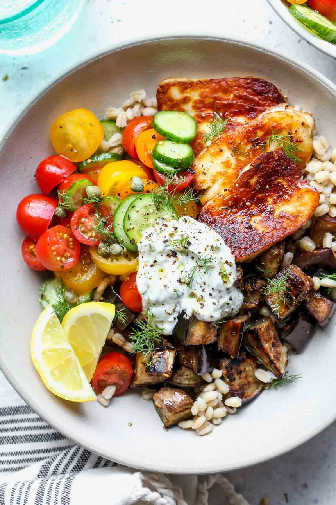

Homepage
Halloumi Salad

Halloumi Salad with Brown rice and Vegetables
This Recipe is a nice and healthy 30 minute Dish with a refreshing summer taste
Ingredients
- Brown Rice 200g
- Halloumi 200g
- 1 Zuccini
- Tomatoes 50g
- Half a Cucumber
- Yoghurt 40g
- Boulione
- 1 Onion
Steps
- Wash the Vegetables and cook the rice with the Boulion in double the water should be half of a finger cup water above the rice
- Slice all the vegetables in mouth friendly sizes
- fry the zuccini with onion in the pan and season with some salt and pepper
- after the zuccini are golden brown set them to the side and fry the Halloumi
- Assemble everthying in the bowl season again and put the yoghurt on top